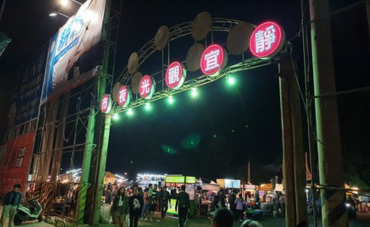
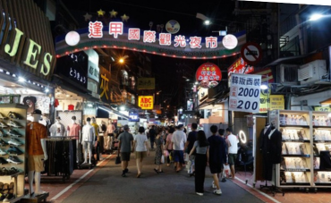
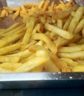
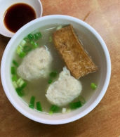
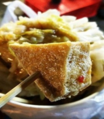
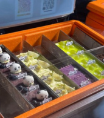
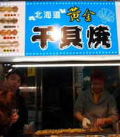
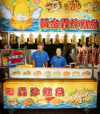

首頁
梧棲中港觀光夜市
靜宜夜市
逢甲夜市
梧棲中港觀光夜市
位於台中市梧棲區的中港觀光夜市，是當地人熱愛的夜市之一。這裡擁有許多特色小吃和便宜的商品，讓遊客每次光臨都能發現新的驚喜。夜市的招牌小吃包括香酥雞、炸物、珍珠奶茶、鹽水雞等，口味多樣、價格實惠，非常適合全家一起來品嘗。除了美食外，夜市還有販售衣物、飾品、玩具等小商品，讓人流連忘返。這裡的夜市氣氛熱鬧非凡，無論是當地居民還是外地遊客，都能在此度過愉快的時光，是台中西區不可錯過的夜市之一。
靜宜夜市

靜宜夜市位於台中市南區靜宜大學附近，是一個結合學生族群和在地居民的熱鬧場所。夜市內有許多實惠且美味的小吃攤位，最受歡迎的有炸雞排、鹽酥雞、滷味等。這裡的小吃價格相對較親民，而且占地不廣，想要快速買個晚餐非常方便，特別受到學生族群的青睞。除了小吃，夜市也有一些文創商品和輕食店，讓人能在吃飽後放鬆心情，購買些手作商品。靜宜夜市的氛圍輕鬆、愉快，是喜歡夜市熱鬧氛圍的遊客的好去處。
逢甲夜市

逢甲夜市是台中最具代表性的夜市之一，位於逢甲大學附近，是當地最熱鬧的夜市之一。這裡的小吃種類繁多，從經典的鹽酥雞、炸大腸、魷魚羹，到創新美食如珍珠奶茶披薩、芋圓冰淇淋等，應有盡有，深受遊客喜愛。逢甲夜市的規模龐大，除了美食外，還有各式各樣的衣物、配件及文創商品攤位，讓遊客可以一邊品嚐美食，一邊逛街購物。夜市充滿活力且多元，適合各年齡層的人群，是到台中旅遊時不容錯過的熱點。
精選六大夜市小吃

中港夜市_閃電李家炸雞＿脆薯
NT$
30/50

中港夜市＿柯南臭豆腐＿貢丸湯
NT$
20

靜宜夜市＿慈禧太后一口臭豆腐＿臭豆腐
NT$
40-60

靜宜夜市＿提拉米蘇＿提拉米蘇
NT$
140

逢甲夜市＿北海道黃金干貝燒＿炭烤干貝
NT$
100

逢甲夜市＿逢甲黃金轟炸魷魚＿炸魷魚
NT$
110